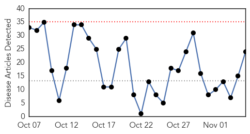
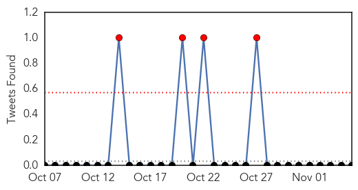
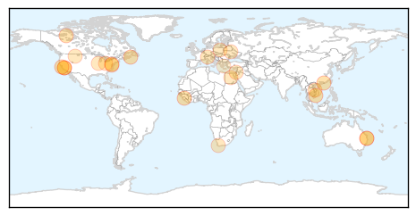
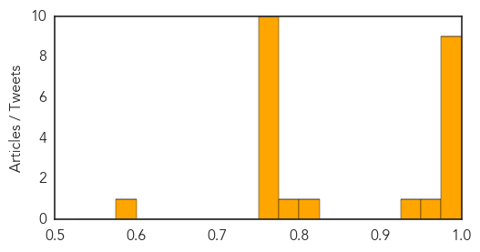
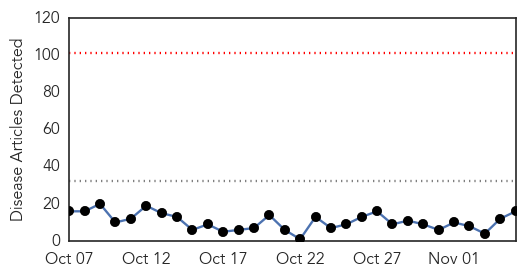

Influenza
30-Day Web Trend
0 alerts, 0 warnings

30-Day Twitter Trend
2 alerts, 0 warnings

Article Locations
Article Confidences
Top Articles:
- 0.999
- Santa Clara County resident is California's first flu-related death this season
- 0.999
- Flu-related death reported in Santa Clara County
- 0.993
- How Vietnam Mastered Infectious Disease Control — NOVA Next
- 0.993
- First Case of Flu in Maryland is Confirmed
- 0.992
- Flu Season Has Started Slowly but Surely
- 0.989
- Stronger flu vaccine on offer in 2016 following record number of cases
- 0.987
- Flu has arrived in Cape Breton
- 0.983
- Confronting Dangerous Viruses is Alumna's Mission
- 0.978
- California's first flu death of season reported in Santa Clara County
- 0.963
- Govt to roll out stronger flu jab in 2016
- 0.930
- 2015 flu vaccine better than last year's, says N.W.T. health official
- 0.808
- ESCMID, ESWI call for increased flu vaccination coverage amongst healthcare professionals
- 0.799
- Aussies set unwanted flu record
- 0.751
- November 5, 2015 Archives
- 0.751
- November 5, 2015 Archives
- 0.751
- November 5, 2015 Archives
- 0.751
- November 5, 2015 Archives
- 0.751
- November 5, 2015 Archives
- 0.751
- November 5, 2015 Archives
- 0.751
- November 5, 2015 Archives
- 0.751
- November 5, 2015 Archives
- 0.751
- November 5, 2015 Archives
- 0.751
- November 4, 2015 Archives
- 0.587
- Researchers identify essential component of antiviral defense
Top Tweets:
-
No tweets found for Nov 05, 2015
Dengue Fever
30-Day Web Trend
0 alerts, 0 warnings

30-Day Twitter Trend
3 alerts, 3 warnings

Article Locations

Article Confidences

Top Articles:
- 0.999
- Dengue Fever Outbreak Hits Hawaii — Will It Last?
- 0.998
- Hawaii dengue outbreak up to 15 cases, Outbreaks not unheard of in US
- 0.996
- Sudanese, WHO officials inspect health situation in West Darfur
- 0.988
- 26 October – 1 November 2015 [EN/AR] - Sudan
- 0.971
- ‘Scientists, citizens need a cohesive,targeted approach to tackle dengue together’
- 0.969
- County closes Hookena Beach
- 0.962
- County closes Hookena Beach; number of dengue fever cases on isle now at 15
- 0.959
- Dengue march in Howrah
- 0.829
- Dengue claims another life in Bengal
- 0.814
- MNA becomes 341st dengue victim in Multan
- 0.749
- BJP cadre protest at Ripon Buildings over dengue
- 0.707
- New Funding Boosts Research For Controlling TB, Malaria, Dengue And Leishmaniasis
- 0.689
- New Funding Boosts Research For Controlling TB, Malaria, Dengue And Leishmaniasis By Bobby Ramakant
- 0.673
- Dengue prevention: MPA files application against secretary health
- 0.572
- High-level meeting on dengue
- 0.563
- Will Yemen’s storm yet prove disastrous? - Yemen
Top Tweets:
-
No tweets found for Nov 05, 2015